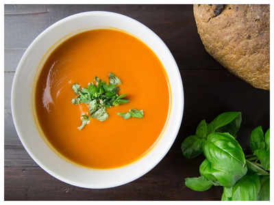

Butternut Soup |
Subscribe to our newsletter |
Ingredients
Instructions
Note: For added protein, add a cup of butter beans reight before blending. |
 |
Butternut: High in Vitamin AOne cup of cooked butternut squash provides more than 450% of the recommended daily intake (RDI) of vitamin A. This vitamin is essential for regulating cell growth, eye health, bone health and immune function. |